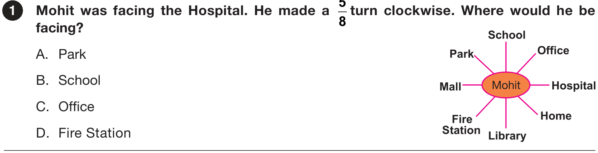
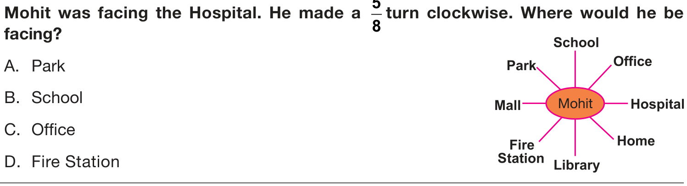
Option A
Option B
Option C
Option D
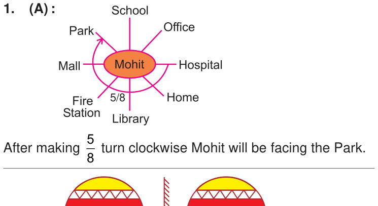
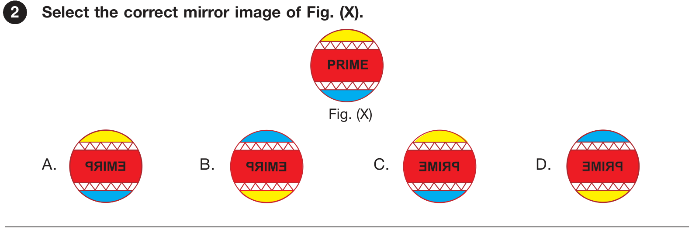
Select the correct mirror image of Fig. (X).
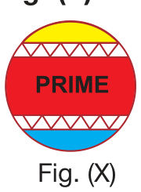
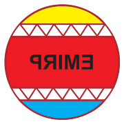
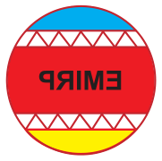
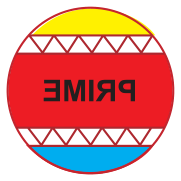
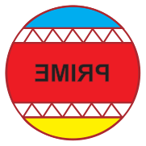
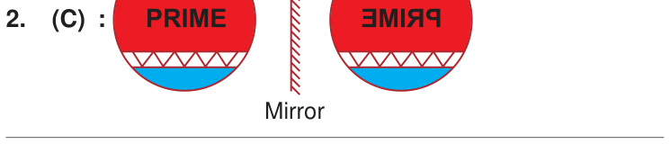
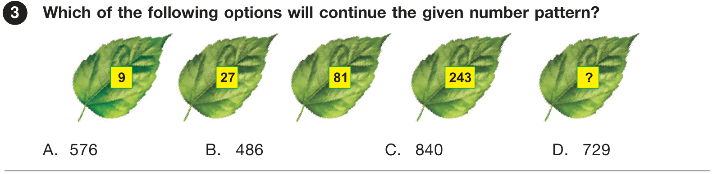
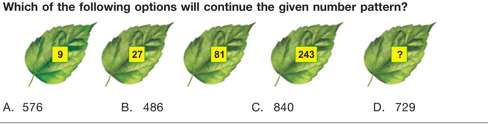
Option A
Option B
Option C
Option D
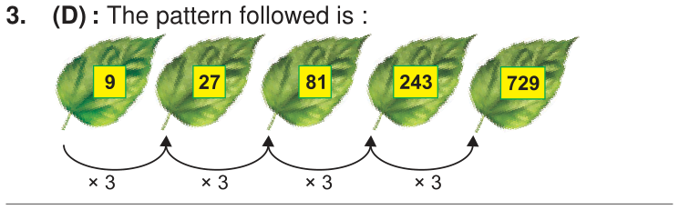
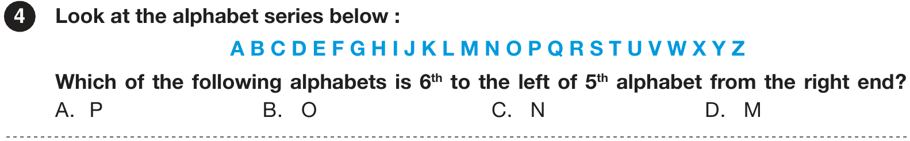
Look at the alphabet series below :
A B C D E F G H I J K L M N O P Q R S T U V W X Y Z
Which of the following alphabets is 6th to the left of 5th alphabet from the right end?
P
O
N
M
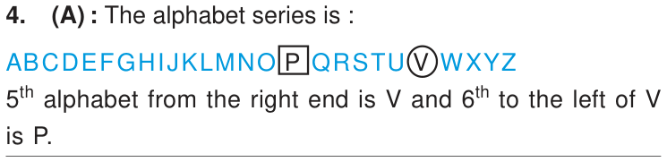
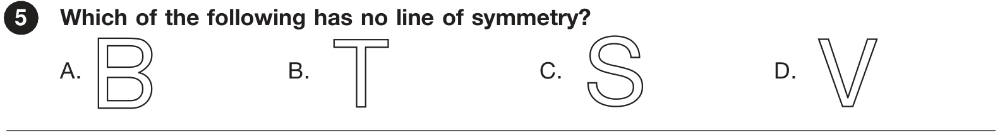
Which of the following has no line of symmetry?
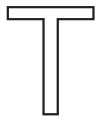
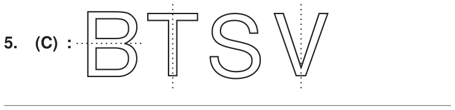
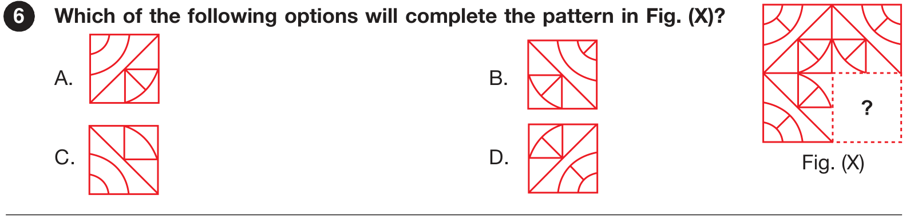
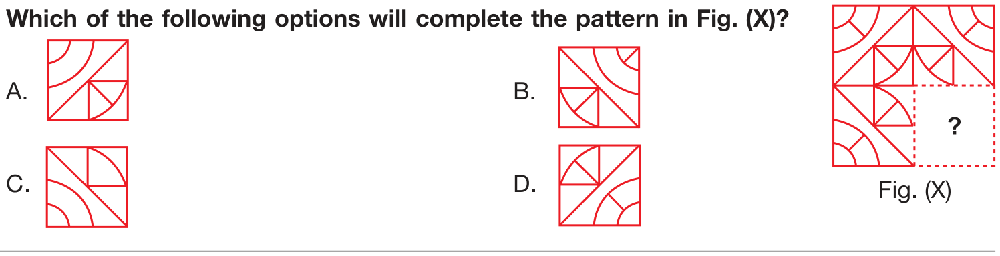
Option A
Option B
Option C
Option D
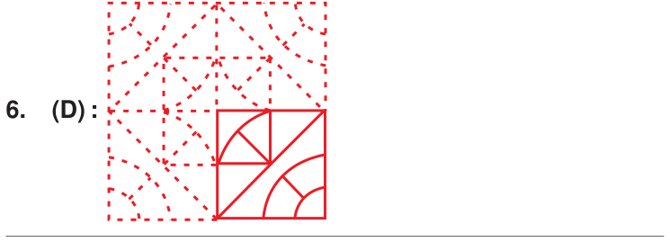
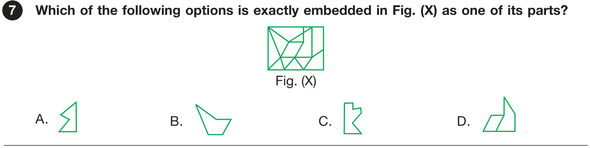
Which of the following options is exactly embedded in Fig. (X) as one of its parts?
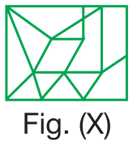
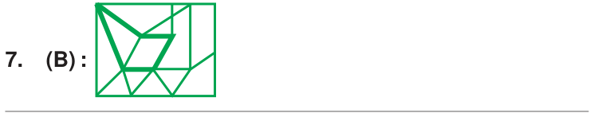
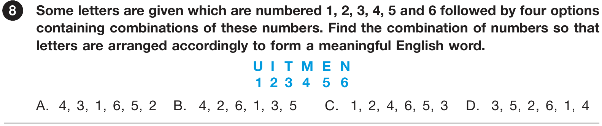
Some letters are given which are numbered 1, 2, 3, 4, 5 and 6 followed by four options containing combinations of these numbers. Find the combination of numbers so that letters are arranged accordingly to form a meaningful English word.
U I T M E N
1 2 3 4 5 6
4, 3, 1, 6, 5, 2
4, 2, 6, 1, 3, 5
1, 2, 4, 6, 5, 3
3, 5, 2, 6, 1, 4
The word formed is : M I N U T E
i.e., 4, 2, 6, 1, 3, 5
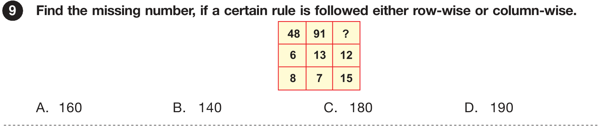
Find the missing number, if a certain rule is followed either row-wise or column-wise.
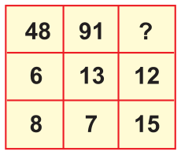
160
140
180
190
The rule followed is ; 6 × 8 = 48
And, 13 × 7 = 91
Similarly, 12 × 15 = 180
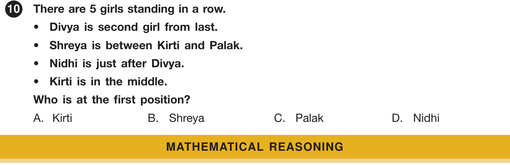
There are 5 girls standing in a row.
• Divya is second girl from last.
• Shreya is between Kirti and Palak.
• Nidhi is just after Divya.
• Kirti is in the middle.
Who is at the first position?
Kirti
Shreya
Palak
Nidhi
According to the given information, the order of 5 girls standing in a row is as follows:
Palak, Shreya, Kirti, Divya, Nidhi
(First)
So, Palak is at the first position.
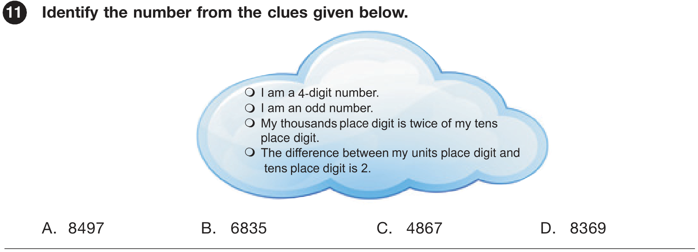
Identify the number from the clues given below.
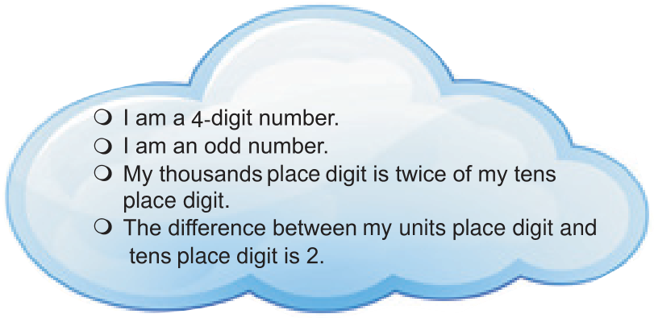
8497
6835
4867
8369
From the given options only option B, satisfies the given conditions.
As, tens place digit = 3
Therefore, thousands place digit = 3 × 2 = 6
Also, difference between units place digit and tens place digit = 5 – 3 = 2
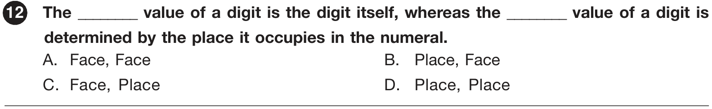
The ________ value of a digit is the digit itself, whereas the ________ value of a digit is determined by the place it occupies in the numeral.
Face, Face
Place, Face
Face, Place
Place, Place
The face value of a digit is the digit itself, whereas the place value of a digit is determined by the place it occupies in the numeral.
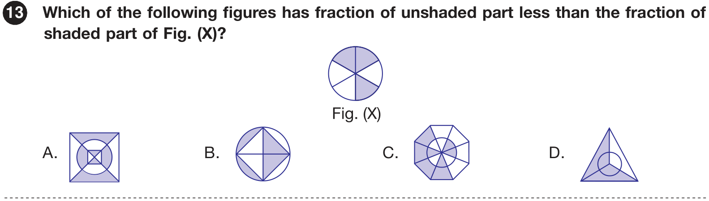
Which of the following figures has fraction of unshaded part less than the fraction of shaded part of Fig. (X)?
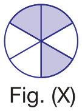
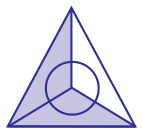
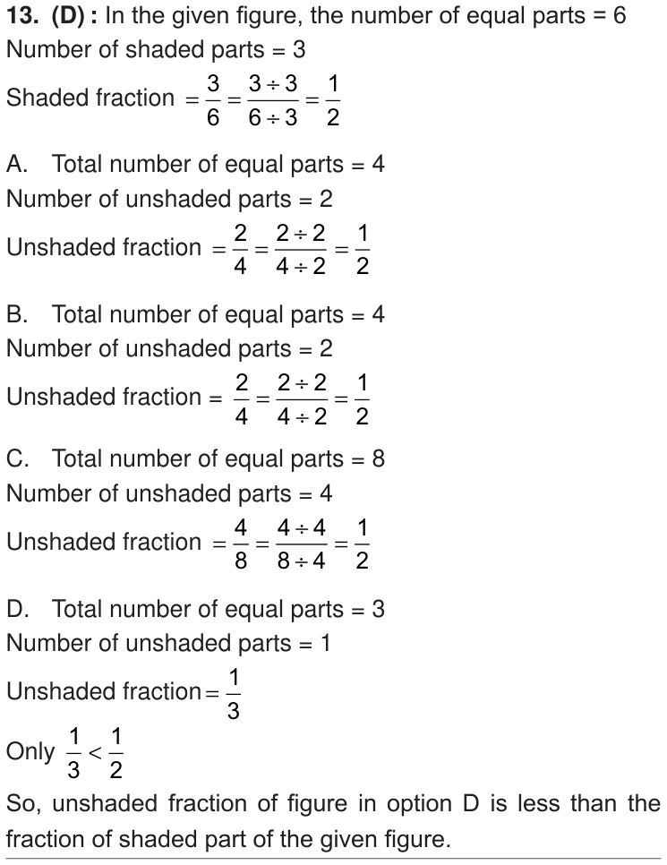
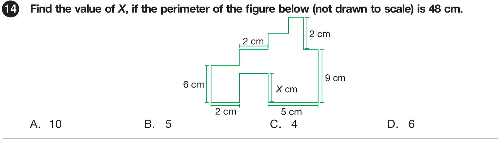
Find the value of X, if the perimeter of the figure below (not drawn to scale) is 48 cm.
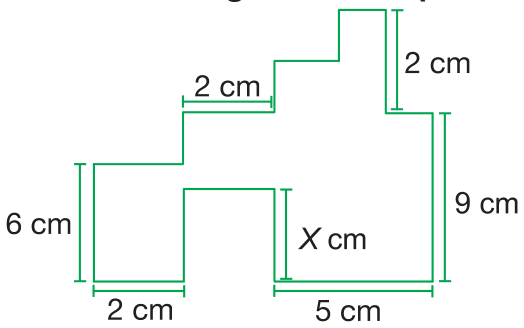
10
5
4
6
Perimeter of given figure
= (2 + 9 + 5 + X + 2 + X + 2 + 9 + 2 + 2 + 2 + 5) cm = (40 + 2X) cm
But, perimeter = 48 cm [Given] Therefore, (40 + 2X) cm = 48 cm
And, 2X = 48 – 40 = 8
Or, 2X = 8
Hence, X = 8 ÷ 2 = 4
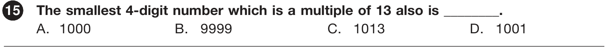
The smallest 4-digit number which is a multiple of 13 also is ________.
1000
9999
1013
1001
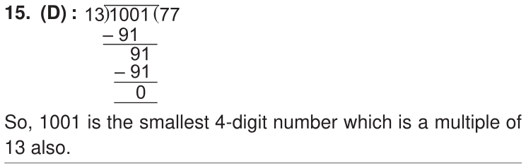
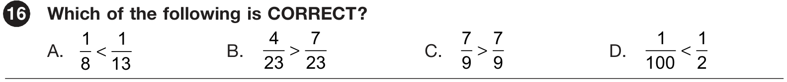
Which of the following is CORRECT?
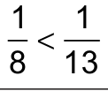
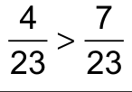
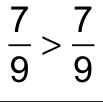
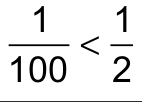
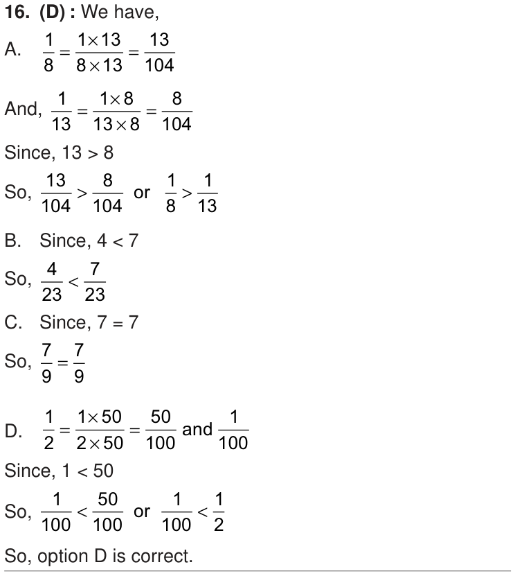
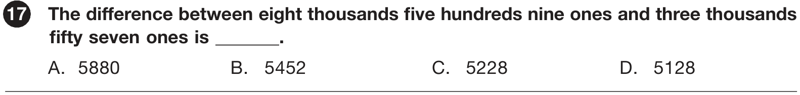
The difference between eight thousands five hundreds nine ones and three thousands fifty seven ones is _______.
5880
5452
5228
5128
Eight thousands five hundreds nine ones = 8509 And three thousands fifty seven ones = 3057
So, required difference = 8509 – 3057
= 5452
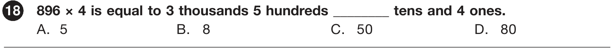
896 × 4 is equal to 3 thousands 5 hundreds ________ tens and 4 ones.
5
8
50
80
We have, 896 × 4 = 3584
i.e., 3 thousands 5 hundreds 8 tens and 4 ones.
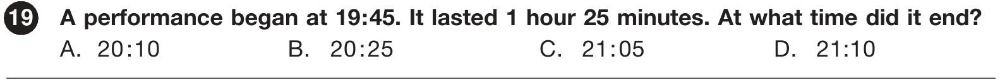
A performance began at 19:45. It lasted 1 hour 25 minutes. At what time did it end?
20:10
20:25
21:05
21:10
Time at which performance began = 19 : 45 Duration of performance = 1 hr 25 mins
So, 1 hr 25 mins after 19 : 45 is 21: 10.
Hence, the performance ended at 21 : 10.
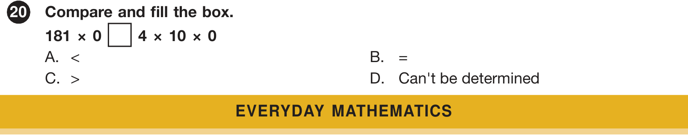
Compare and fill the box.
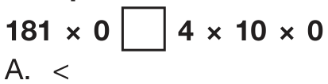
=
>
Can't be determined
A milk booth supplies 50 L of milk everyday. On a particular day, the supply was 31 L 250 mL. The quantity of milk supplied on a particular day was ______ less than everyday supply.
18 L 750 mL
81 L 750 mL
18 L 740 mL
80 L 740 mL
Ram's mother had 4 apples. She gave each one of Ram's three friends half an apple to eat. What fraction of the 4 apples was remained?
1
2
Neha had 21 novels. She got two more from her aunt, 12 more on her birthday and bought 3 more with her pocket money. How many novels does she has now?
38
40
36
28
Number of novels Neha had = 21
Number of novels she got from her aunt = 2
Number of novels she got on her birthday = 12
Number of novels she bought from her pocket money = 3 Therefore, total number of novels she has now
=(21 + 2 + 12 + 3) = 38
Amit went for a walk and returned home at 7:00 a.m. If it took him 2 hours and 45 minutes, then at what time did he start to walk?
4:45 a.m.
4:30 a.m.
4:15 a.m.
3:45 a.m.
Time at which Amit returned home = 7:00 a.m. Total duration of the walk = 2 hours 45 minutes
So, 2 hours 45 minutes before 7 :00 a.m. is 4 :15 a.m. Hence, he started to walk at 4 : 15 a.m.
Sneha uses 15 tomatoes to make half a litre of tomato sauce. How much sauce can she make from 45 tomatoes?
One and half litres
Two litres
Three litres
Two and half litres
There are 54 balls which are kept into 6 bags such that the number of balls in each bag is equal. How many balls are there in 2 such bags?
9
108
18
12
Number of balls in 6 bags = 54 Number of balls in 1 bag = 54 ÷ 6 = 9 Number of balls in 2 bags = 9 × 2 = 18
1 kg of onions costs ₹ 25. If 3 kg of onions cost as much as 5 kg of potatoes, how much will it cost to buy 12 kg each of potatoes and onions altogether ?
₹ 400
₹ 180
₹ 480
₹ 300
Cost of 1 kg of onions = ₹ 25
Cost of 3 kg of onions = ₹ (25 × 3) = ₹ 75
Cost of 5 kg of potatoes = ₹ 75
Cost of 1 kg of potatoes = ₹ (75 ÷ 5) = ₹ 15
Cost of 12 kg of potatoes = ₹ (15 × 12) = ₹ 180
Also, cost of 12 kg of onions = ₹ (25 × 12) = ₹ 300
Total cost of 12 kg of each of potatoes and onions = ₹ (180 + 300) = ₹ 480
Riya and Richa had an equal number of marbles. Riya gave 35 marbles to Richa and lost 10 marbles. If Riya is left with 25 marbles, then find the total number of marbles Riya and Richa had initially.
135
176
105
140
Number of marbles Riya gave to Richa = 35 Number of marbles Riya lost = 10
Number of marbles left with Riya = 25
Total number of marbles Riya had = 35 + 10 + 25 = 70 Therefore, total number of marbles Riya and Richa had initially = 70 + 70 = 140
Vivan bought 6 kg 500 g of wheat from one shop and 3 kg 850 g of wheat from another shop. How much wheat did he buy altogether?
16 kg 300 g
15 kg 170 g
10 kg 900 g
10 kg 350 g
Quantity of wheat Vivan bought from first shop = 6 kg 500 g = 6500 g
Quantity of wheat he bought from second shop
= 3 kg 850 g = 3850 g
Total quantity of wheat bought by him = (6500 + 3850)g = 10350 g = 10 kg 350 g
A doll costs ₹ 428 more than a teddy bear. If cost of the teddy bear is ₹ ₹ 1290, then how much does the doll cost?
₹ 1718
₹ 1780
₹ 1700
₹ 1500
Cost of a teddy bear = ₹ 1290
Doll costs ₹ 428 more than the teddy bear.
Therefore, cost of the doll = ₹ (1290 + 428) = ₹ 1718
1
0
2
4506
4560
9450
3435
Modern Library has 32436 books of English, 32100 books of Hindi and 25880 books of Mathematics. National Library has 25808 books of English, 32346 books of Science and 32101 books of Mathematics. Which of the following statements is true?
Modern Library has 150 more books than National Library.
Both Libraries have the same number of books.
Modern Library has 157 less books than National Library.
Modern Library has 161 more books than National Library.
Total number of books in Modern Library
= 32436 + 32100 + 25880 = 90416
Total number of books in National Library
= 25808 + 32346 + 32101 = 90255
So, Modern Library has (90416 – 90255) = 161 more books than National Library.
Study the given bar graph showing marks scored by a student in different subjects and answer the following question.
Find the difference between the highest marks scored and total number of marks scored in Maths and Hindi.
80
88
96
184
The figure shows the weight of different toys. What is the total weight of an apple, a doll and a toy car?
140 g
200 g
155 g
217 g